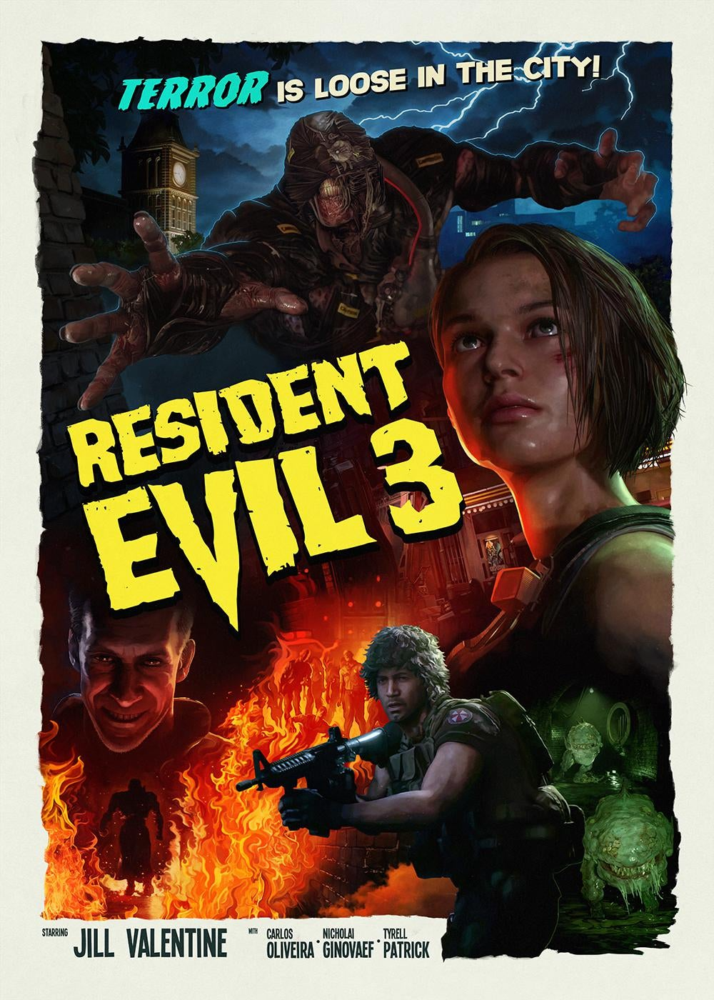

|  | Resident EvilResident Evil 3 Orginally release 22 September 1999 and after 21 year they made remake version at 3 April 2020 |
Resident Evil 3 is a 2020 survival horror video game developed and published by Capcom for Microsoft Windows, PlayStation 4, and Xbox One. It is a remake of the 1999 Resident Evil game Resident Evil 3: Nemesis, and follows former elite agent Jill Valentine and mercenary Carlos Oliveira as they attempt to find a vaccine and escape from a city that has been infected by a viral bioweapon. The game is played from an over-the-shoulder, third-person perspective and requires the player to solve puzzles and defeat opponents while being pursued by a creature called Nemesis. Most of Resident Evil 3 was developed concurrently with the 2019 remake of Resident Evil 2 and both games run on Capcom's proprietary RE Engine. Although the game features the same premise as the original, many parts were rearranged in favor of a more focused story. To honor the more action-oriented approach of the original, developers revamped the movement speed and animations from the Resident Evil 2 remake and added an ability for players to dodge incoming attacks. Because some features from the original game were excluded, a separate online multiplayer game, Resident Evil: Resistance, was bundled with Resident Evil 3.
| Characters | About |
|---|---|
| Jill Valentine | Jill Valentine[a] is a fictional character in Resident Evil (Biohazard in Japan), a survival horror video game series created by Japanese company Capcom |
| Carlos Oliveira | Carlos Oliveira (カルロス・オリヴェイラ, Karurosu Oriveira), the second main character of Resident Evil 3,[25] is a mercenary and a former member of a South American communist guerrilla group |
| Chris Redfield ⭐⭐⭐⭐ | Albert Wesker ⭐⭐⭐ |
| Rebecca Chambers ⭐⭐⭐ | Leon Scott Kennedy ⭐⭐⭐⭐ |
| Claire Redfield ⭐⭐⭐⭐⭐ | Ada Wong ⭐⭐⭐⭐⭐ |
| Billy Coen ⭐⭐ | Jake Muller ⭐⭐ |